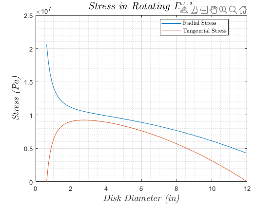

Contents
Stress In Rotating Disk
clear; clc; close all
inToMeter = (1 / 39.37);
Disk Parameters
disk.material = '6061 - T6 Aluminum';
disk.thickness = .25 * inToMeter;
disk.density = 2700;
disk.poisson = .325;
disk.yield = 255 * 10^6;
disk.innerRadius = 5/8;
disk.outerRadius = 12;
disk.innerRadius = disk.innerRadius * inToMeter;
disk.outerRadius = disk.outerRadius * inToMeter;
r = disk.innerRadius:(.1 * inToMeter):disk.outerRadius(end);
w = 3000;
w = w * 2 * pi / 60;
disk.volume = pi * ((disk.outerRadius .^ 2) - (disk.innerRadius ^2 )) ...
* (disk.thickness);
disk.mass = disk.volume * disk.density;
Loading on Disk
load.names = {'Camera 1', 'Camera 2', 'Camera 3', 'Camera 3 Mount', ...
'Weight Disk'};
load.magnitudes = [(.4922 / 2.205) (.4922/ 2.205) (.4922 / 2.205) ...
(.3483 / 2.205) disk.mass];
for ii = 1:length(load.names)
forces(ii).name = load.names{ii};
end
forces(1).loadCoord = [-1.9375 -4.226 (disk.thickness / 2)] / 39.37;
forces(2).loadCoord = [2.852 0 (disk.thickness / 2)] / 39.37;
forces(3).loadCoord = [-1.9375 .7298 (disk.thickness / 2)] / 39.37;
forces(4).loadCoord = [-1.9 2.2267 (disk.thickness / 2)] / 39.37;
forces(5).loadCoord = [0 0 0];
for ii = 1:length(load.magnitudes)
forces(ii).loadMag = [0 0 -load.magnitudes(ii)];
end
Solving for Reaction Forces
syms Ry
summation.forcesY = 0 == Ry + forces(1).loadMag(3) + ...
forces(2).loadMag(3) + forces(3).loadMag(3) + forces(4).loadMag(3) ...
+ forces(5).loadMag(3);
Ry = double(solve(summation.forcesY, Ry));
Calculating Bending Moments
M = zeros(1, 3, length(forces));
for ii = 1:length(forces)
M(:, :, ii) = cross(forces(ii).loadCoord, forces(ii).loadMag);
end
Stress Due to Torsion
T = 1.5;
J = (pi / 32) .* ((disk.outerRadius .^ 4) - (disk.innerRadius ^ 4));
stress.tau = T .* disk.outerRadius ./ J;
FS.torsion = disk.yield / stress.tau;
Bending Stress
[stress.bendingX, stress.bendingY] = deal(0);
for ii = 1:length(M)
stress.bendingX = stress.bendingX + M(1, 1, ii);
stress.bendingY = stress.bendingY + M(1, 2, ii);
end
I = (disk.mass / 2) * (((disk.outerRadius / 2) ^ 2 ) + ...
((disk.innerRadius / 2) ^ 2));
Stresses
stress.r = disk.density * (w ^ 2) * ...
((3 + disk.poisson) / 8) * ...
((disk.innerRadius ^ 2) + (disk.outerRadius ^ 2) + ...
(((disk.innerRadius ^ 2) * (disk.outerRadius ^ 2)) ...
./ (r .^ 2)) - (((1 + (3 * disk.poisson)) / ...
(3 + disk.poisson)) .* (r .^ 2)));
stress.rMax = max(stress.r);
stress.t = disk.density * (w ^ 2) * ...
((3 + disk.poisson) / 8) * ...
((disk.innerRadius ^2) + (disk.outerRadius ^ 2) - ...
(((disk.innerRadius ^ 2) * (disk.outerRadius ^ 2)) ./...
(r .^ 2)) - (r .^ 2));
stress.tMax = max(stress.t);
stress.temp = cat(3, stress.rMax, stress.tMax);
stress.max = max(stress.temp, [], 3);
FS.rotation = disk.yield / stress.max;
Radial and Tangential Stress Plot
figure(1)
plot(r .* 39.37, stress.r, 'DisplayName', 'Radial Stress');
hold on
grid on
grid minor
plot(r .* 39.37, stress.t, 'DisplayName', 'Tangential Stress')
xlabel('\emph {Disk Diameter (in)}','fontsize',14,'Interpreter',...
'latex');
ylabel('\emph {Stress (Pa)}','fontsize',14,'Interpreter','latex');
title('\emph {Stress in Rotating Disk}','fontsize',16,'Interpreter',...
'latex')
legend('location', 'Best', 'Interpreter', 'latex')
hold off

Stress Tensor
stress.stressTensor = [(stress.rMax + sum(stress.bendingX)) ...
stress.tau 0; stress.tau (stress.tMax + sum(stress.bendingY)) 0; ...
0 0 0];
FS.principal = disk.yield ./ max(eig(stress.stressTensor));